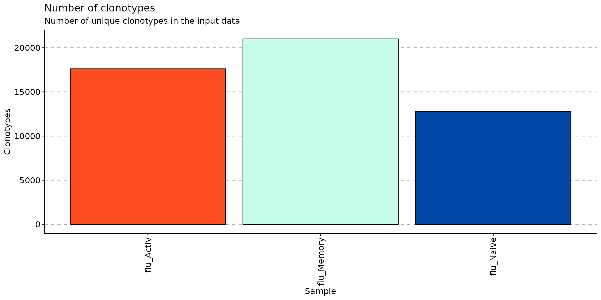

vignettes/web_only/repFilter_v3.Rmd
repFilter_v3.RmdIn many research cases, you would want to filter your data by metadata, clonotypes parameters or genes, so for this purpose, you can use the repFilter function.
repFilter has 3 parameters: .method, .query and .match.
Due to the ambiguity of ways to extract required data, repFilter has the following methods:
.method = "by.meta" - filters data using information from meta data.
.method = "by.repertoire" or "by.rep" - filters data using information about repertoire statistics.
.method = "by.clonotype" or "by.cl" - filters data using information about clonotype sequences.
Parameter .query is a list specifying the condition for filtering. Elements in the list are conditions, names of elements - columns chosen for filtering. Names in elements should not be repeated in .query. If you need to write a complex condition, you can call the function multiple times.
Parameter .match denotes the type of match between condition and value to filter:
exact - looks for exact match.substring- looks for substring.startswith - looks for string starting with the some patternParameter .match can be applied to both by.meta and by.clonotype
Load the package into the R environment:
For testing purposes we will use scdata and immdata datasets from Immunarch library. Load them by executing the following command:
data(immdata)Look at meta data from immdata datasets:
#look at the metadata
immdata$meta## # A tibble: 12 × 6
## Sample ID Sex Age Status Lane
## <chr> <chr> <chr> <dbl> <chr> <chr>
## 1 A2-i129 C1 M 11 C A
## 2 A2-i131 C2 M 9 C A
## 3 A2-i133 C4 M 16 C A
## 4 A2-i132 C3 F 6 C A
## 5 A4-i191 C8 F 22 C B
## 6 A4-i192 C9 F 24 C B
## 7 MS1 MS1 M 12 MS C
## 8 MS2 MS2 M 30 MS C
## 9 MS3 MS3 M 8 MS C
## 10 MS4 MS4 F 14 MS C
## 11 MS5 MS5 F 15 MS C
## 12 MS6 MS6 F 15 MS C
#look at samples name in data
names(immdata$data)## [1] "A2-i129" "A2-i131" "A2-i133" "A2-i132" "A4-i191" "A4-i192" "MS1"
## [8] "MS2" "MS3" "MS4" "MS5" "MS6"by.meta
Use include and exclude options to select a subset of samples or repertoires that match given filter criterion. These options accept strings.
Let’s filter your data by metadata immdata datasets when Status is C and look at new meta data:
## # A tibble: 6 × 6
## Sample ID Sex Age Status Lane
## <chr> <chr> <chr> <dbl> <chr> <chr>
## 1 A2-i129 C1 M 11 C A
## 2 A2-i131 C2 M 9 C A
## 3 A2-i133 C4 M 16 C A
## 4 A2-i132 C3 F 6 C A
## 5 A4-i191 C8 F 22 C B
## 6 A4-i192 C9 F 24 C BNote that we filter both metadata and data:
# filtered data
names(repFilter(immdata, .method = "by.meta", .query = list(Status = include("C")))$data)## [1] "A2-i129" "A2-i131" "A2-i133" "A2-i132" "A4-i191" "A4-i192"Filter out samples where Lane is not A:
## # A tibble: 8 × 6
## Sample ID Sex Age Status Lane
## <chr> <chr> <chr> <dbl> <chr> <chr>
## 1 A4-i191 C8 F 22 C B
## 2 A4-i192 C9 F 24 C B
## 3 MS1 MS1 M 12 MS C
## 4 MS2 MS2 M 30 MS C
## 5 MS3 MS3 M 8 MS C
## 6 MS4 MS4 F 14 MS C
## 7 MS5 MS5 F 15 MS C
## 8 MS6 MS6 F 15 MS C## [1] "A4-i191" "A4-i192" "MS1" "MS2" "MS3" "MS4" "MS5"
## [8] "MS6"Filter for samples where Lane is B or C:
## # A tibble: 8 × 6
## Sample ID Sex Age Status Lane
## <chr> <chr> <chr> <dbl> <chr> <chr>
## 1 A4-i191 C8 F 22 C B
## 2 A4-i192 C9 F 24 C B
## 3 MS1 MS1 M 12 MS C
## 4 MS2 MS2 M 30 MS C
## 5 MS3 MS3 M 8 MS C
## 6 MS4 MS4 F 14 MS C
## 7 MS5 MS5 F 15 MS C
## 8 MS6 MS6 F 15 MS C## [1] "A4-i191" "A4-i192" "MS1" "MS2" "MS3" "MS4" "MS5"
## [8] "MS6"Filter out samples where Lane is not A and not C:
## # A tibble: 2 × 6
## Sample ID Sex Age Status Lane
## <chr> <chr> <chr> <dbl> <chr> <chr>
## 1 A4-i191 C8 F 22 C B
## 2 A4-i192 C9 F 24 C B## [1] "A4-i191" "A4-i192"Use interval, lessthan(from minus infinity to your value) or morethan(from your value to plus infinity) to define interval values in the filter statement. These options accept float. lessthan and morethan do not include borders and interval includes the left border and excludes the right border.
Filter for samples where Age is lower than 23:
## # A tibble: 10 × 6
## Sample ID Sex Age Status Lane
## <chr> <chr> <chr> <dbl> <chr> <chr>
## 1 A2-i129 C1 M 11 C A
## 2 A2-i131 C2 M 9 C A
## 3 A2-i133 C4 M 16 C A
## 4 A2-i132 C3 F 6 C A
## 5 A4-i191 C8 F 22 C B
## 6 MS1 MS1 M 12 MS C
## 7 MS3 MS3 M 8 MS C
## 8 MS4 MS4 F 14 MS C
## 9 MS5 MS5 F 15 MS C
## 10 MS6 MS6 F 15 MS C## [1] "A2-i129" "A2-i131" "A2-i133" "A2-i132" "A4-i191" "MS1" "MS3"
## [8] "MS4" "MS5" "MS6"Filter for samples where Age is upper than 15:
## # A tibble: 4 × 6
## Sample ID Sex Age Status Lane
## <chr> <chr> <chr> <dbl> <chr> <chr>
## 1 A2-i133 C4 M 16 C A
## 2 A4-i191 C8 F 22 C B
## 3 A4-i192 C9 F 24 C B
## 4 MS2 MS2 M 30 MS C## [1] "A2-i133" "A4-i191" "A4-i192" "MS2"Filter for samples where Age is between 15 and 23:
## # A tibble: 4 × 6
## Sample ID Sex Age Status Lane
## <chr> <chr> <chr> <dbl> <chr> <chr>
## 1 A2-i133 C4 M 16 C A
## 2 A4-i191 C8 F 22 C B
## 3 MS5 MS5 F 15 MS C
## 4 MS6 MS6 F 15 MS C## [1] "A2-i133" "A4-i191" "MS5" "MS6"You can also use multiple conditions. In this case, the function returns values that matches both of this conditions (logical AND operator)
Filter for samples where Age is between 15 and 23 and Lane is B :
repFilter(immdata, .method = "by.meta", .query = list(Age = interval(15, 23), Lane = include('B')))$meta## # A tibble: 1 × 6
## Sample ID Sex Age Status Lane
## <chr> <chr> <chr> <dbl> <chr> <chr>
## 1 A4-i191 C8 F 22 C B
names(repFilter(immdata, .method = "by.meta", .query = list(Age = interval(15, 23), Lane = include('B')))$data)## [1] "A4-i191"Filter for samples where Age is between 15 and 23 and Lane is A or B:
repFilter(immdata, .method = "by.meta", .query = list(Age = interval(15, 23), Lane = include('A', 'B')))$meta## # A tibble: 2 × 6
## Sample ID Sex Age Status Lane
## <chr> <chr> <chr> <dbl> <chr> <chr>
## 1 A2-i133 C4 M 16 C A
## 2 A4-i191 C8 F 22 C B
names(repFilter(immdata, .method = "by.meta", .query = list(Age = interval(15, 23), Lane = include('A', 'B')))$data)## [1] "A2-i133" "A4-i191"by.repertoire (short alias is by.rep)
Filter for repertoires containing more than 6000 clonotypes:
## # A tibble: 8 × 6
## Sample ID Sex Age Status Lane
## <chr> <chr> <chr> <dbl> <chr> <chr>
## 1 A2-i129 C1 M 11 C A
## 2 A2-i131 C2 M 9 C A
## 3 A2-i133 C4 M 16 C A
## 4 A2-i132 C3 F 6 C A
## 5 MS2 MS2 M 30 MS C
## 6 MS3 MS3 M 8 MS C
## 7 MS4 MS4 F 14 MS C
## 8 MS6 MS6 F 15 MS C
repFilter(immdata, .method = "by.rep", .query = list(n_clonotypes = morethan(6000)))$meta # Works both with by.rep and by.repertoire## # A tibble: 8 × 6
## Sample ID Sex Age Status Lane
## <chr> <chr> <chr> <dbl> <chr> <chr>
## 1 A2-i129 C1 M 11 C A
## 2 A2-i131 C2 M 9 C A
## 3 A2-i133 C4 M 16 C A
## 4 A2-i132 C3 F 6 C A
## 5 MS2 MS2 M 30 MS C
## 6 MS3 MS3 M 8 MS C
## 7 MS4 MS4 F 14 MS C
## 8 MS6 MS6 F 15 MS CBe careful, filtering by.repertoire or by.rep could also change a number of repertoires(samples) in your data:
names(repFilter(immdata, .method = "by.repertoire", .query = list(n_clonotypes = morethan(6000)))$data)## [1] "A2-i129" "A2-i131" "A2-i133" "A2-i132" "MS2" "MS3" "MS4"
## [8] "MS6"Filter for repertoires containing less than 6000 clonotypes:
## # A tibble: 4 × 6
## Sample ID Sex Age Status Lane
## <chr> <chr> <chr> <dbl> <chr> <chr>
## 1 A4-i191 C8 F 22 C B
## 2 A4-i192 C9 F 24 C B
## 3 MS1 MS1 M 12 MS C
## 4 MS5 MS5 F 15 MS C
repFilter(immdata, .method = "by.rep", .query = list(n_clonotypes = lessthan(6000)))$meta # Works both with by.rep and by.repertoire## # A tibble: 4 × 6
## Sample ID Sex Age Status Lane
## <chr> <chr> <chr> <dbl> <chr> <chr>
## 1 A4-i191 C8 F 22 C B
## 2 A4-i192 C9 F 24 C B
## 3 MS1 MS1 M 12 MS C
## 4 MS5 MS5 F 15 MS C
names(repFilter(immdata, .method = "by.repertoire", .query = list(n_clonotypes = lessthan(6000)))$data)## [1] "A4-i191" "A4-i192" "MS1" "MS5"by.clonotype (short alias isby.cl)
Filter out all noncoding clonotypes from immdata. As you see, immdata dataset doesn’t contain any noncoding clonotypes:
repFilter(immdata, .method = "by.clonotype", .query = list(CDR3.aa = exclude("partial", "out_of_frame")))$meta## # A tibble: 12 × 6
## Sample ID Sex Age Status Lane
## <chr> <chr> <chr> <dbl> <chr> <chr>
## 1 A2-i129 C1 M 11 C A
## 2 A2-i131 C2 M 9 C A
## 3 A2-i133 C4 M 16 C A
## 4 A2-i132 C3 F 6 C A
## 5 A4-i191 C8 F 22 C B
## 6 A4-i192 C9 F 24 C B
## 7 MS1 MS1 M 12 MS C
## 8 MS2 MS2 M 30 MS C
## 9 MS3 MS3 M 8 MS C
## 10 MS4 MS4 F 14 MS C
## 11 MS5 MS5 F 15 MS C
## 12 MS6 MS6 F 15 MS CNote that filtering by.clonotype or by.cl works within repertoire(sample). Repertoire(sample) could be removed from your data only in case if all clonotypes in sample do not meet the condition:
names(repFilter(immdata, .method = "by.clonotype", .query = list(CDR3.aa = exclude("partial", "out_of_frame")))$data)## [1] "A2-i129" "A2-i131" "A2-i133" "A2-i132" "A4-i191" "A4-i192" "MS1"
## [8] "MS2" "MS3" "MS4" "MS5" "MS6"Filter out clonotypes that have only one clone:
## # A tibble: 12 × 6
## Sample ID Sex Age Status Lane
## <chr> <chr> <chr> <dbl> <chr> <chr>
## 1 A2-i129 C1 M 11 C A
## 2 A2-i131 C2 M 9 C A
## 3 A2-i133 C4 M 16 C A
## 4 A2-i132 C3 F 6 C A
## 5 A4-i191 C8 F 22 C B
## 6 A4-i192 C9 F 24 C B
## 7 MS1 MS1 M 12 MS C
## 8 MS2 MS2 M 30 MS C
## 9 MS3 MS3 M 8 MS C
## 10 MS4 MS4 F 14 MS C
## 11 MS5 MS5 F 15 MS C
## 12 MS6 MS6 F 15 MS C## [1] "A2-i129" "A2-i131" "A2-i133" "A2-i132" "A4-i191" "A4-i192" "MS1"
## [8] "MS2" "MS3" "MS4" "MS5" "MS6"In method by.clonotype or by.cl, there is an extra argument .match. The .match argument can has the following values: - exact - looks for exact match in gene names - substring- looks for substring in gene names - startswith - looks for gene names starting with the chosen pattern
Filter out all clonotypes within samples with V gene ‘TRBV1’ or ‘TRGV11’
repFilter(immdata, .method = "by.clonotype", .query = list(V.name = exclude("TRBV1", "TRGV11")), .match="exact")Filter out all clonotypes within samples where V gene name contains substrings ‘TRBV1’ or ‘TRGV11’
repFilter(immdata, .method = "by.clonotype", .query = list(V.name = exclude("TRBV1", "TRGV11")), .match="substring")Filter out all clonotypes within samples where V gene name starts with ‘TRBV1’ or ‘TRGV11’
repFilter function for single-cell repertoire data analysis
We will use scdata datasets from Immunarch library. Load them by executing the following command:
data(scdata)Look at meta data from scdata datasets:
#look at the metadata
scdata$meta## # A tibble: 1 × 1
## Sample
## <chr>
## 1 flu
#look at samples name in data
names(scdata$data)## [1] "flu"repFiter can also work with single-cell data containing not only meta and ’data`, but also extra information, e.g. about clusters:
repFilter(scdata, .method = "by.clonotype", .query = list(CDR3.aa = exclude("partial", "out_of_frame")))Create a new dataset with cluster-specific immune repertoires (for more information see Single-cell tutorials):
scdata_cl <- select_clusters(scdata, scdata$bc_cluster, "Cluster")
scdata_cl$meta## # A tibble: 3 × 3
## Sample Cluster.source Cluster
## <chr> <chr> <chr>
## 1 flu_Activ flu Activ
## 2 flu_Memory flu Memory
## 3 flu_Naive flu NaiveAnd compare the number of clonotypes between clusters:
vis(repExplore(scdata_cl$data, .method = "volume"))
Compare J gene usage between three clusters:
sc_active <- geneUsage(repFilter(scdata_cl, .method = "by.meta", .query = list(Cluster = include('Activ')))$data, "hs.trbj", .norm = T)
p1 <- vis(sc_active)## Using Names as id variables
p1
sc_memory <- geneUsage(repFilter(scdata_cl, .method = "by.meta", .query = list(Cluster = include('Memory')))$data, "hs.trbj", .norm = T)
p2 <- vis(sc_memory)## Using Names as id variables
p2
sc_naive <- geneUsage(repFilter(scdata_cl, .method = "by.meta", .query = list(Cluster = include('Naive')))$data, "hs.trbj", .norm = T)
p3 <- vis(sc_naive)## Using Names as id variables
p3Compare gene usage of IGHJ4 between three clusters:
scdata_active <- repFilter(scdata_cl, .method = "by.meta", .query = list(Cluster = include('Activ')))
scdata_active <- repFilter(scdata_active, .method = "by.cl", .query = list(J.name = include('IGHJ4')), .match = 'substring')
sc_active <- geneUsage(scdata_active$data, "hs.trbj", .norm = T)
p1 <- vis(sc_active)## Using Names as id variables
scdata_memory <- repFilter(scdata_cl, .method = "by.meta", .query = list(Cluster = include('Memory')))
scdata_memory <- repFilter(scdata_memory, .method = "by.cl", .query = list(J.name = include('IGHJ4')), .match = 'substring')
sc_memory <- geneUsage(scdata_memory$data, "hs.trbj", .norm = T)
p2 <- vis(sc_memory)## Using Names as id variables
scdata_naive <- repFilter(scdata_cl, .method = "by.meta", .query = list(Cluster = include('Naive')))
scdata_naive <- repFilter(scdata_naive, .method = "by.cl", .query = list(J.name = include('IGHJ4')), .match = 'substring')
sc_naive <- geneUsage(scdata_naive$data, "hs.trbj", .norm = T)
p3 <- vis(sc_naive)## Using Names as id variables
p1 + p2 + p3Look at the coding clonotypes in each cluster. Note that there aren’t any noncoding clonotypes in the datasets:
scdata_active <- repFilter(scdata_cl, .method = "by.meta", .query = list(Cluster = include('Activ')))
scdata_active <- repFilter(scdata_active, .method = "by.clonotype", .query = list(CDR3.aa = exclude("partial", "out_of_frame")))
exp_vol <- repExplore(scdata_active$data, .method = "volume")
p1 <- vis(exp_vol)
exp_vol <- repExplore(repFilter(scdata_cl, .method = "by.meta", .query = list(Cluster = include('Activ')))$data, .method = "volume")
p2 <- vis(exp_vol)
p1+p2
scdata_memory <- repFilter(scdata_cl, .method = "by.meta", .query = list(Cluster = include('Memory')))
scdata_memory <- repFilter(scdata_memory, .method = "by.clonotype", .query = list(CDR3.aa = exclude("partial", "out_of_frame")))
exp_vol <- repExplore(scdata_memory$data, .method = "volume")
p1 <- vis(exp_vol)
exp_vol <- repExplore(repFilter(scdata_cl, .method = "by.meta", .query = list(Cluster = include('Memory')))$data, .method = "volume")
p2 <- vis(exp_vol)
p1+p2
scdata_naive <- repFilter(scdata_cl, .method = "by.meta", .query = list(Cluster = include('Naive')))
scdata_naive <- repFilter(scdata_naive, .method = "by.clonotype", .query = list(CDR3.aa = exclude("partial", "out_of_frame")))
exp_vol <- repExplore(scdata_naive$data, .method = "volume")
p1 <- vis(exp_vol)
exp_vol <- repExplore(repFilter(scdata_cl, .method = "by.meta", .query = list(Cluster = include('Naive')))$data, .method = "volume")
p2 <- vis(exp_vol)
p1+p2